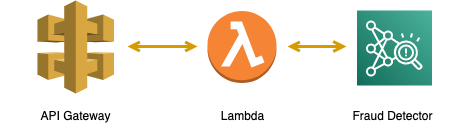
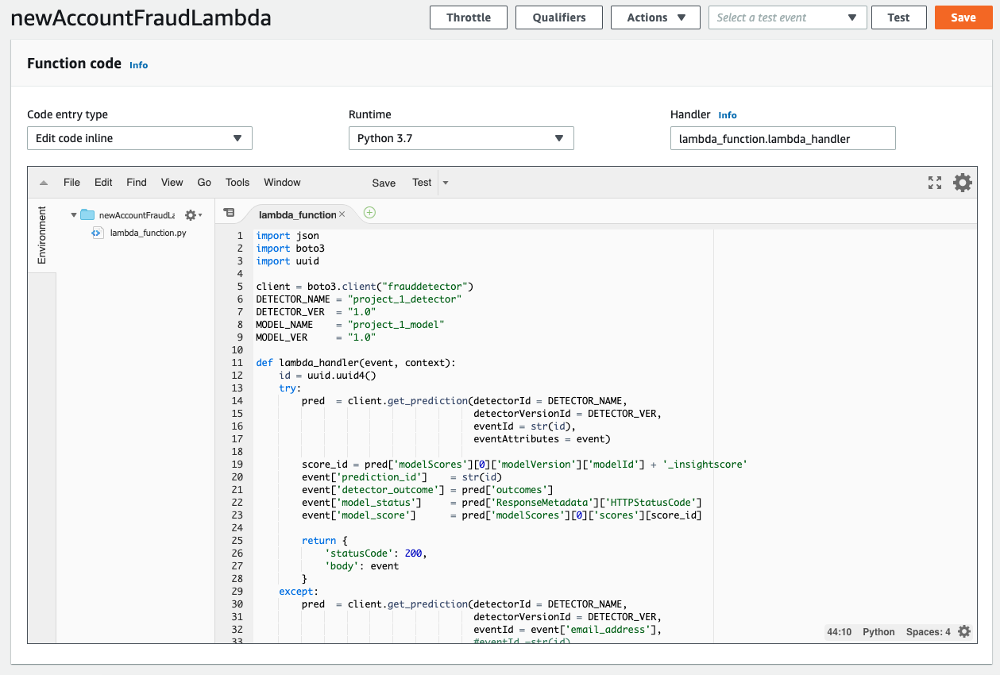
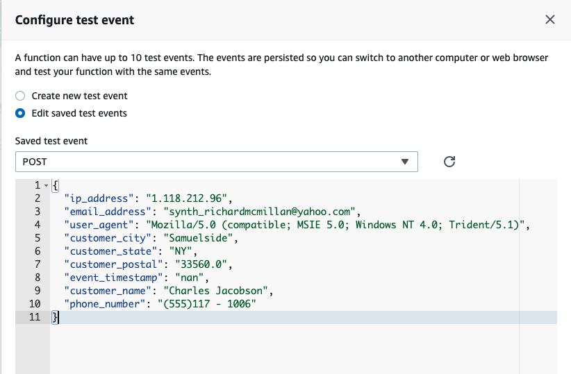
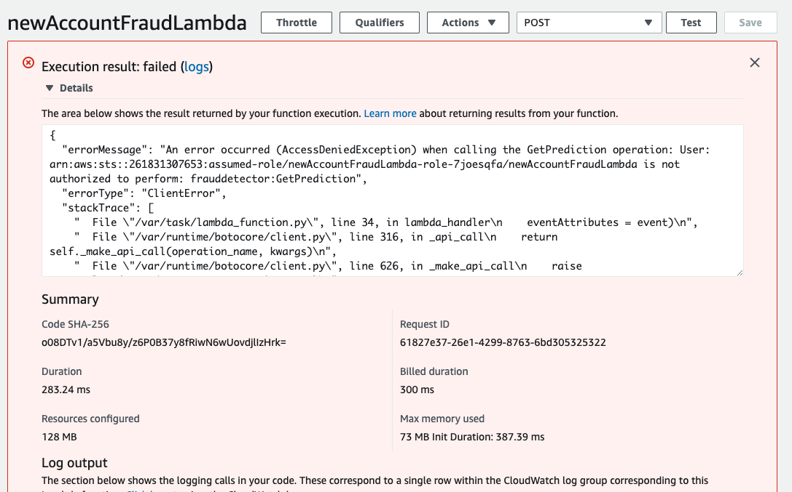
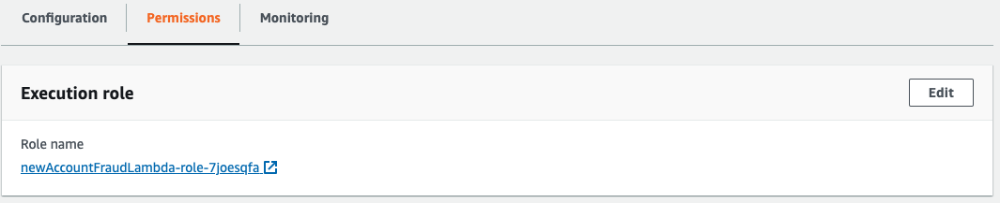
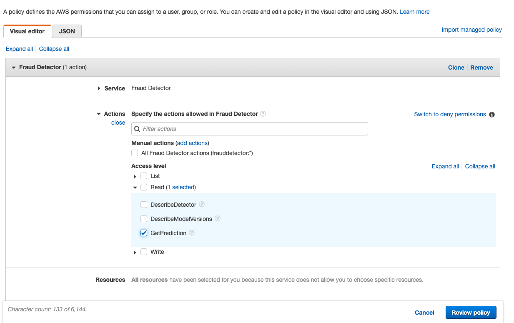
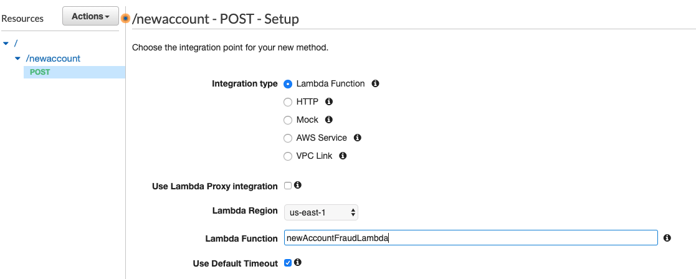
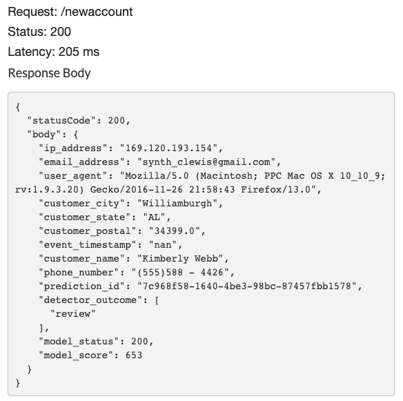

Project 2. Integration Using AWS Lambda with Amazon API Gateway
How do I integrate Fraud Detector with external systems and other AWS services?
AWS Lambda is an event-driven server-less computing platform. AWS Lambda automatically runs your code without requiring you to provision or manage servers. Just write your Lambda function and trigger it’s execution. In our case we are going to trigger our lambda function from a REST call. This allows us to integrate our Fraud Detector with other systems to stop fraud in real-time, regardless of platform. Here is the recipe:
- Create a AWS Lambda Function to call Fraud Detector’s get_prediction function
- Create a REST API using Amazon API Gateway to trigger the Lambda function
- Test your API
- Deploy it

Step 1. Create a AWS Lambda Function
to create a lambda function, fire up Lambda in the console, create a new Lambda, select author from scratch, name your lambda newAccountFraudLambda, and select Python 3.7 for the run time environment.

The copy the following code into your new lambda function.
import json
import boto3
import uuid
client = boto3.client("frauddetector")
DETECTOR_NAME = "project_1_detector"
DETECTOR_VER = "1.0"
MODEL_NAME = "project_1_model"
MODEL_VER = "1.0"
def lambda_handler(event, context):
id = uuid.uuid4()
try:
pred = client.get_prediction(detectorId = DETECTOR_NAME,
detectorVersionId = DETECTOR_VER,
eventId = str(id),
eventAttributes = event)
score_id = pred['modelScores'][0]['modelVersion']['modelId'] + '_insightscore'
event['prediction_id'] = str(id)
event['detector_outcome'] = pred['outcomes']
event['model_status'] = pred['ResponseMetadata']['HTTPStatusCode']
event['model_score'] = pred['modelScores'][0]['scores'][score_id]
return {
'statusCode': 200,
'body': event
}
except:
pred = client.get_prediction(detectorId = DETECTOR_NAME,
detectorVersionId = DETECTOR_VER,
eventId = event['email_address'],
#eventId =str(id),
eventAttributes = event)
event['prediction_id'] = str(id)
event['detector_outcome'] = '-- failed --'
event['model_status'] = pred['ResponseMetadata']['HTTPStatusCode']
event['model_score'] = -1
return {
'statusCode': pred['ResponseMetadata']['HTTPStatusCode'],
'body': event
}It should look something like this.

Step 3. Test your Lambda
Configure a Test Event. Call your test POST
Copy the following into your test event and select Save.
{
"ip_address": "1.118.212.96",
"email_address": "synth_richardmcmillan@yahoo.com",
"user_agent": "Mozilla/5.0 (compatible; MSIE 5.0; Windows NT 4.0; Trident/5.1)",
"customer_city": "Samuelside",
"customer_state": "NY",
"customer_postal": "33560.0",
"event_timestamp": "nan",
"customer_name": "Charles Jacobson",
"phone_number": "(555)117 - 1006"
}It should look something like this

Now Test your Lambda Function!

Oops!!! We need to attach Fraud Detector’s getPrediction action to our Lambda function.
Click permissions and this will bring you to where you can attach Policies to your lambda function.

I created a policy called “lambdaGetPrediction” which just has Fraud Detector’s getPrediction action,

and then attached the policy to my lambda function

Now we are really ready to test!!
Select Test.

BAM! we have a successful test… now on to creating an API.
Step 4. Create REST API with Amazon API Gateway
Amazon API Gateway is a managed service that makes it easy to create, publish and secure APIs. In this case, the API is gong to act like a “front door” to our Lambda function. Once created, our new API will enable real-time two-way communication between applications. API Gateway handles all the tasks involved in accepting and processing our concurrent API calls at scale.
note: you can also trigger Lambda functions from a wide variety of events including landing an S3 file in a bucket.

Next we need to name our API. In this case I named mine newAccountFraudApi

Next create a resource named newaccount, add the POST method and finally link your API to your Lambda Function newAccountFraudLambda. We use a POST method rather than a GET method simply because it’s easier and more secure. GET parameters are passed via URL, they are easily exposed in server logs and browser history. POST just puts the information in request message body.

At this point your API should look something like the following. Essentially this is the mapping of your call from request to lambda to response.

Step 5. Test your REST API
Next we want to test our API, to do this we simply click Test

Add the following to the Request Body, since we are doing a POST rather than a GET we can just jam our JSON in the body.
{"ip_address": "169.120.193.154",
"email_address": "synth_clewis@gmail.com",
"user_agent": "Mozilla/5.0 (Macintosh; PPC Mac OS X 10_10_9; rv:1.9.3.20) Gecko/2016-11-26 21:58:43 Firefox/13.0",
"customer_city": "Williamburgh",
"customer_state": "AL",
"customer_postal": "34399.0",
"event_timestamp": "2020-04-11 17:48:52",
"customer_name": "Kimberly Webb",
"phone_number": "(555)588 - 4426"}Here’s the response back from our Lambda call. You can see in the response we sent back the event with a prediction_id, detector_outcomes, model_score and status. Of course you can modify your lambda function’s response to be really anything your application needs.

Step 6. Deploy your REST API
The last step is to deploy your API, this makes a callable URL for your REST API. To do this you simply create a “stage”, I created one called PROD and deployed my API to it. You’ll end up with a URL like this. https://ewnwtespu4.execute-api.us-east-1.amazonaws.com/PROD/newaccount

Step 7. Curl your REST API
cURL is a command line tool which can be used to call an API from command line. I’m lazy so i created a file with my prediction record, called record.txt
record.txt just contains the following
{"ip_address": "169.120.193.154",
"email_address": "synth_clewis@gmail.com",
"user_agent": "Mozilla/5.0 (Macintosh; PPC Mac OS X 10_10_9; rv:1.9.3.20) Gecko/2016-11-26 21:58:43 Firefox/13.0",
"customer_city": "Williamburgh",
"customer_state": "AL",
"customer_postal": "34399.0",
"event_timestamp": "2020-04-11 17:48:52",
"customer_name": "Kimberly Webb",
"phone_number": "(555)588 - 4426"}I then use –data option to pass my text file to my REST service
Here is my curl command:
curl –data @record.txt https://ewnwtespu4.execute-api.us-east-1.amazonaws.com/PROD/newaccount
and my response:
{"statusCode": 200,
"body": {"ip_address": "169.120.193.154",
"email_address": "synth_clewis@gmail.com",
"user_agent":
"Mozilla/5.0 (Macintosh; PPC Mac OS X 10_10_9; rv:1.9.3.20) Gecko/2016-11-26 21:58:43 Firefox/13.0",
"customer_city": "Williamburgh",
"customer_state": "AL",
"customer_postal": "34399.0",
"event_timestamp": "2020-04-11 17:48:52",
"customer_name": "Kimberly Webb",
"phone_number": "(555)588 - 4426",
"prediction_id": "b483a095-2823-43ad-9bb3-912c04678ae8",
"detector_outcome": ["review"],
"model_status": 200,
"model_score": 653.0}
}Conclusion - Project 2.
Congratulations, you have made it through both “hands on projects” and gone “end to end” with Amazon Fraud Detector. You’ve done the following:
- Trained and Evaluated a Fraud Detector Model
- Created a Detector and Authored Rules
- Tested and Published a Detector
- Made predictions on new data
- Created and Tested a Lambda function for integration with other AWS services
- Created and Tested your own REST API so that your Detector can be called from anywhere
What’s next? Your next step is to creating your own Proof of Concept with Fraud Detector!